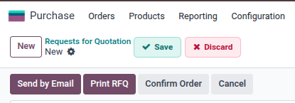

Modern Save and Discard Buttons
This free module replaces Odoo's small icon-only form controls with clear Save and Discard buttons.
It works globally on standard backend form views and keeps Odoo's default save and discard behavior.
Main Features
- Show clear Save and Discard labels on form views.
- Improve backend usability for daily users.
- Keep Odoo keyboard shortcuts: S for Save and J for Discard.
- No configuration required.
- Depends only on Odoo core web module.
Screenshots
Clear Save and Discard buttons
Save and Discard buttons are displayed with clear labels, so users do not need to guess icon meaning.

Usage
- Install the module.
- Open any backend form view.
- Edit any field.
- Use the visible Save or Discard button.
This module is free and uses only standard Odoo web behavior.